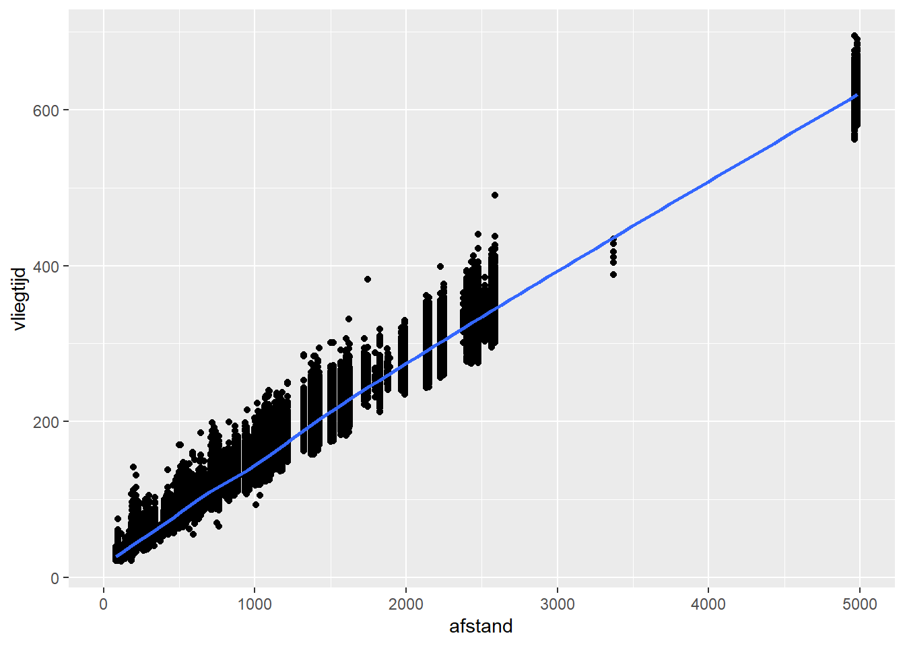

Hoofdstuk 2 Datatypes en datavisualisatie
2.1 Data
- Data is het resultaat van een meting van een attribuut van een specifiek object met een specifiek meetinstrument.
- Het object verwijst naar wat je gaat meten.
- vb.: Student “Karel Jespers”.
- Een object hoort meestal tot een verzameling van objecten. Deze verzameling wordt ook wel de populatie genoemd.
- vb.: Populatie “Studenten 1ste Ba HI/BI”.
- Een specifiek object uit de populatie wordt ook wel element genoemd.
- vb.: “Karel Jespers” is een element uit de populatie “Student 1ste Ba HI/BI”.
- Je meet altijd een specifiek aspect van het object. Omdat de meetwaarde van dit aspect kan variëren tussen verschillende objecten (elementen) in je verzameling (populatie), worden zulke aspecten ook variabelen genoemd.
- vb.: Lengte is een specifiek aspect (variabele) van de student “Karel Jespers” (element).
- De meting gebeurt met behulp van een meetinstrument. Het is belangrijk te beseffen dat een meetinstrument altijd een zekere nauwkeurigheid heeft (tot hoeveel cijfers na de komma exact kan je meten?) en mogelijk ook onderhevig kan zijn aan willekeurige en/of systematische meetfouten.
- vb.: Student “Karel Jespers” wordt gemeten met een meetlat bevestigd tegen de muur. De meetlat heeft een nauwkeurigheid van 1cm, dus we kunnen zijn lengte niet uitdrukken in millimeters. Verder is de meetlat 2cm te laag opgehangen. Bijgevolg is er een systematische meetfout van 2cm. Tenslotte wordt de meting geregistreerd door een arts die vluchtig kijkt waar de student uitkomt op de meetlat. Het is dus niet onmogelijk dat de werkelijke lengte (willekeurig) afwijkt van de geregistreerde lengte.
- Tenzij anders vermeld wordt, gaan we in dit hoofdstuk uit van meetinstrumenten met oneindige nauwkeurigheid en zonder meetfouten.
- De uitkomst van een meting voor een specifiek element wordt de waarde genoemd.
- vb.: 1m80 is de waarde van de variabele “lengte” voor element “student Karel Jespers”
- Het object verwijst naar wat je gaat meten.
2.2 Dataset
- Een dataset is een verzameling van data waarbij
- Iedere rij één element uit de populatie voorstelt.
- Iedere kolom een variabele is die gemeten wordt.
- De verschillende rijen verschillende elementen uit dezelfde populatie voorstellen.
- De waarde in een cel de meting is van de betreffende variabele voor het betreffend element.
| luchthaven | maatschappij | datum | vertrek_vertraging | aankomst_vertraging | afstand | vliegtijd |
|---|---|---|---|---|---|---|
| EWR | United Air Lines Inc. | 2013-01-01 05:15:00 | 2 | 11 | 1400 | 227 |
| LGA | United Air Lines Inc. | 2013-01-01 05:29:00 | 4 | 20 | 1416 | 227 |
| JFK | American Airlines Inc. | 2013-01-01 05:40:00 | 2 | 33 | 1089 | 160 |
| LGA | Delta Air Lines Inc. | 2013-01-01 06:00:00 | -6 | -25 | 762 | 116 |
| EWR | United Air Lines Inc. | 2013-01-01 05:58:00 | -4 | 12 | 719 | 150 |
| EWR | JetBlue Airways | 2013-01-01 06:00:00 | -5 | 19 | 1065 | 158 |
| LGA | ExpressJet Airlines Inc. | 2013-01-01 06:00:00 | -3 | -14 | 229 | 53 |
| JFK | JetBlue Airways | 2013-01-01 06:00:00 | -3 | -8 | 944 | 140 |
| LGA | American Airlines Inc. | 2013-01-01 06:00:00 | -2 | 8 | 733 | 138 |
| JFK | JetBlue Airways | 2013-01-01 06:00:00 | -2 | -2 | 1028 | 149 |
2.3 Klassieke datatypologie
- Klassieke onderverdeling van data
- Nominaal, Ordinaal, Interval en Ratio
- Gebaseerd op de publicatie “On the Theory of Scales of Measurement” (1946)
- Beschrijft een hiërarchie van ‘datatypes’
- Alles wat ordinaal is, is ook nominaal, maar niet omgekeerd.
- Alles wat interval is, is ook ordinaal, maar niet omgekeerd.
- Alles wat ratio is, is ook interval, maar niet omgekeerd.
- Identificeert geschikte statistische testen voor ieder type.
- Beschrijft een hiërarchie van ‘datatypes’
- Ieder datatype voldoet aan één of meerdere van de volgende eigenschappen:
- Identiteit: Iedere waarde heeft een unieke betekenis.
- Grootorde: Er is een natuurlijke volgorde tussen de waarden.
- Gelijke intervals: Eenheidsverschillen zijn overal even groot. Dus het verschil tussen 1 en 2 is even groot als het verschil tussen 19 en 20.
- Absoluut nulpunt: De waarde 0 betekent dat er ook feitelijk niets aanwezig is van de variabele en is niet een arbitrair gekozen nulpunt.
Nominaal
- Voorbeelden:
- Geslacht: Man, Vrouw.
- Ondernemingsvorm: vzw, bvba, nv.
- Voldoet enkel aan de eigenschap ‘identiteit’.
- Dit betekent dat we enkel concluderen of twee waardes gelijk zijn of niet. Er bestaat geen natuurlijke volgorde tussen de verschillende waardes.
Ordinaal
- Voorbeeld:
- Opleidingsniveau: Lager onderwijs, Middelbaar onderwijs, Hoger onderwijs.
- Klantentevredenheid: Ontevreden, Matig tevreden, Tevreden, Zeer tevreden.
- Voldoet aan de eigenschappen ‘identiteit’ en ‘grootorde’.
- Dit betekent dat we niet alleen kunnen concluderen of twee waardes gelijk zijn of niet. Het is ook mogelijk te bepalen welke waarde ‘groter’ is.
- We kunnen echter niet zeggen hoeveel groter één waarde is dan de andere.
Interval
- Voorbeeld:
- Temperatuur (Celsius).
- Voldoet aan de eigenschappen ‘identiteit’, ‘grootorde’ en ‘gelijke intervals’.
- We kunnen nu twee waardes vergelijken, bepalen welke groter is alsook de verschillen tussen waardes met elkaar vergelijken.
- We kunnen dus stellen dat het verschil tussen 8 en 9 graden Celsius daadwerkelijk minder groot is dan het verschil tussen 12 en 20 graden Celsius.
Ratio
- Voorbeeld:
- Gewicht
- Voldoet aan alle 4 de eigenschappen.
- We kunnen verschillende gewichten met elkaar vergelijken, we kunnen bepalen wat zwaarder is en we kunnen gewichtsverschillen onderling vergelijken. Hierbij komt nu ook nog dat we kunnen zeggen hoeveel keer iets zwaarder is dan iets anders.
- Dit is een gevolg van het feit dat de waarde 0 nu feitelijk betekent dat iets geen gewicht heeft.
2.4 De klassieke datatypologie is misleidend
- Voorbeeld:
- Op een feestje wordt bij het binnengaan oplopende nummers toegewezen aan iedere gast, beginnend bij 1.
- Tijdens het feestje wordt er een tombola georganiseerd en wie nummer 126 heeft, heeft gewonnen.
- 1 gast vergelijkt dit nummer met haar kaartje en ziet dat ze gewonnen heeft. Zij beschouwde de waarde op haar ticket dus als een nominale variabele want het enige wat ze vergelijkt is of de waarde op haar ticket verschillend is van de winnende waarde.
- Een andere gast kijkt naar zijn kaartje en ziet dat hij nummer 56 heeft. Hij concludeert dat hij te vroeg is binnengekomen en beschouwt de waarde op zijn kaartje dus als ordinaal.
- Nog een andere gast heeft een kaartje met nummer 70 en beschikt over bijkomende data omtrent het ritme waarmee gasten zijn binnengekomen. Deze gast kan dus schatten hoeveel later hij had moeten binnenkomen om te winnen en interpreteert zijn nummer dus als een interval variabele.
- Dit voorbeeld illustreert dat het datatype niet een vaststaand kenmerk is van de data, maar afhankelijk is van de vraag die je tracht te beantwoorden en de extra informatie waarover je beschikt.
2.5 Alternatieve datatypologie
- Alternatieve taxonomie van data
- Graden: vb. academische graad: “op voldoende wijze”, “onderscheiding”, “grote onderscheiding”, … (geordende labels)
- Rangordes: vb. plaats in voetbalklassement: 1, 2, 3, …, 16 (gehele getallen die beginnen bij 1)
- Fracties: vb. percentage opgenomen verlof: van 0% tot 100% (ligt tussen 0 en 1, als percentage uit te drukken).
- Aantallen: vb aantal kinderen: 0, 1, 2, … (niet-negatieve gehele waarden).
- Hoeveelheden: vb. inkomen (niet-negatieve reële waarden).
- Saldo: vb. winst (negatieve en positieve reële waarden).
- Voor deze cursus volstaat het meestal een onderscheid te maken tussen categorische en continue variabelen.
- Categorisch: Nominaal + Ordinaal.
- Continu: Interval + Ratio.
2.6 Datavisualisatie
- Vaak de eerste stap om zicht te krijgen op de data.
- Relatief eenvoudig om patronen te zien, maar minder geschikt om exacte waarden te zien.
- We moeten hierbij onderscheid maken tussen exploratieve visualisaties en informatieve visualisaties om een boodschap over te brengen.
- Exploratieve visualisaties dienen om snel inzicht te krijgen in patronen in de data. Men besteedt hierbij veel minder aandacht aan de opmaak van de visualisatie. Vaak is deze visualisatie tijdelijk en niet bedoeld voor communicatie naar derden.
- Informatieve visualisaties dienen om een boodschap over te brengen aan derden. Hier dient men heel veel aandacht te besteden aan de opmaak zodat de boodschap duidelijk en helder gecommuniceerd wordt.
- We kunnen bij exploratieve visualisaties een onderscheid maken tussen univariate, bivariate en multivariate visualisaties.
2.7 Datavisualisatie van 1 variabele (univariaat)
- Als we slechts 1 variabele bestuderen, dan zijn we voornamelijk geïnteresseerd in de spreiding van de data. Dit wordt de verdeling van de data genoemd.
- Welke vragen kunnen we beantwoorden met dit soort visualisaties?
- Wat is de meest voorkomende waarde van de data? Dit wordt ook de modus genoemd.
- Bezit de data 1 modus, i.e. 1 waarde die duidelijk dominant is, of meerdere modi?
- Indien er slechts 1 afgetekende modus is, dan wordt de verdeling unimodaal genoemd.
- Indien er meerdere modi zijn (dominante waarden), dan wordt de verdeling multimodaal genoemd.
- Een multimodale verdeling kan er op wijzen dat de objecten in je data niet allemaal van hetzelfde type zijn en dat je in feiten twee populaties in je data aanwezig hebt.
- Is de data geconcentreerd rond de modus of eerder breed verspreid. Met andere woorden, wat is de spreiding? Dit geeft inzicht in de variabiliteit van de data.
- Is de data gelijkmatig verdeeld aan weerszijden van de modus of zien we duidelijk meer data aan één zijde van de verdeling? Indien er meer data aan één zijde van de verdeling ligt (ten opzichte van de modus) dan zegt men dat de verdeling asymetrisch verdeeld is.
- Zijn er waardes die opmerkelijk ver van de modus verwijderd zijn en geïsoleerd zijn van andere observaties? Dit worden extreme waarden of outliers genoemd. Deze verdienen meestal extra aandacht.
2.7.1 Categorische variabele
- Verticale barplot
- Op de X-as staan de verschillende waardes van de categorische variabele.
- Bij iedere waarde tekenen we een verticale balk die aangeeft hoe vaak die waarde in de dataset voorkomt.
- Minder geschikt indien er veel waarden zijn. Dan wordt de X-as snel onleesbaar.
- Je kan natuurlijk de labels roteren. Maar dit kan nog steeds onhandig zijn om te lezen.
- In geval van een nominale variabele zijn er twee mogelijkheden om de waarden te rangschikken:
- Alfabetisch. Dit is handig om snel waarden terug te vinden.
- Volgens frequentie. Dit is handig om snel te zien welke waarden vaak/weinig voorkomen en geeft ook een beter beeld van de verdeling van de waarden.
- Horizontale barplot
- Zelfde principe als verticale barplots, maar dan met horizontale balken.
- Verticale/Horizontale dotplot
- In plaats van balken te gebruiken om de frequentie van een waarde aan te geven, kan je dit ook met punten doen.
- Een dotplot laat duidelijker zien waar de sprongen in de verdeling zit. Daarom is de dotplot vooral relevant als je de waarden ordent volgens frequentie.
- Net als de barplot kan je zowel een verticale als horizontale dotplot maken.
- Stacked barplot
- We maken nu slechts 1 kolom. Iedere waarde is een andere kleur en neemt een deel van de balk in beslag. De volledige balk stelt 100% van de data voor.
- Kan nuttig zijn om data cumulatief te bestuderen.
- Hiermee kunnen we vragen beantwoorden zoals: “Welke waarden moeten we nemen om met zo weinig mogelijk waarden x% van de objecten te hebben?”
- Waarom geen pie charts?
- Moeilijk te interpreteren.
- Verschillen tussen waarden zijn enkel duidelijk bij grote verschillen, terwijl barplots en dotplots deze ook bij kleine verschillen kunnen tonen.
- Voor cumulatieve analyses van de data zijn stacked barplots beter omdat het hier eenvoudiger is om af te leiden waar x% zicht bevindt.
2.7.2 Continue variabele
- Histogram
- Analoog met barplot, alleen gaan we hier eerst onze “categorieën” definiëren.
- Dit wordt ‘binning’ genoemd en wordt bepaald door een bin-breedte te kiezen.
- Je kan de binbreedte rechtstreeks kiezen of bepalen door vast te leggen hoeveel categorieën/bins je wenst.
- Voor de visualisatie, worden alle waarden gegroepeerd per ‘bin’.
- De binbreedte kan een enorme impact hebben op het uitzicht van de verdeling.
- Hoe breder de bins, hoe minder modi je kan detecteren.
- Hoe smaller de bins, hoe meer modi je gaat zien, hoewel dit niet altijd even betekenisvol is.
- Hoe smaller de bins, hoe minder data er in iedere bin gaat zitten en dan kunnen patronen wel in jouw dataset bestaan maar louter ten gevolge van toeval.

- Boxplot
- De lijn in het midden duidt de mediaan aan. Dit betekent dat 50% van je data onder deze lijn ligt, terwijl 50% er boven ligt.
- De box in het midden duidt de middelste 50% van je data aan. Dit wordt ook de interkwartiel-box genoemd. Dit betekent dat 25% van je data onder deze box zit en nog eens 25% boven deze box ligt. Hoe groter de box, des te meer de data gespreid is.
- Indien de box aan één zijde van de mediaanlijn groter is dan aan de andere zijde, dan wijst dit er op dat de data meer gespreid is aan die kant.
- De “whiskers” geven de laatste datapunten aan die als “normaal” beschouwd worden. Datapunten buiten deze grenzen beschouwt een boxplot als outliers of extreme waarden.
- De grens waar data van normaal naar extreem overgaat wordt door de boxplot bepaald door anderhalf keer de grootte van de interkwartiel-box op te tellen (en af te trekken) van de bovenste (onderste) grens van de interkwartiel-box. Punten die hier buiten liggen zijn outliers en worden als aparte punten aangeduid. De whiskers zelf duiden de laatste datapunten aan binnen deze grenzen.

- Het is niet abnormaal dat er outliers in je data aanwezig zijn.
- Bij normaal verdeelde data zal je gemiddeld 7 outliers per 1000 datapunten mogen verwachten.
- Een normale verdeling is een bepaalde manier waarop data waarden verdeeld kunnen zijn die in de realiteit vaak voorkomt.
- Indien je echter veel meer outliers ziet op je boxplot visualisatie, dan is de kans reëel dat er meer aan de hand is:
- Er zijn bijvoorbeeld systematische meetfouten
- De objecten in je data zijn in feite op bepaalde aspecten significant verschillend waardoor je ze apart zou moeten bestuderen.
- Violinplot
- Een violinplot kan je beschouwen als een combinatie van een histogram en een boxplot.
- Net als bij een boxplot wordt op verticale wijze getoond hoe de data verspreid is.
- Net als bij een histogram kan je goed zien waar het volume (de massa) van de data zich bevindt.
- Net als bij een histogram kan je detecteren hoeveel modi de data bezit.
- In tegenstelling tot de boxplot, kan je bij een violinplot wel niet duidelijk zien waar bijvoorbeeld het ‘midden’ van je data is.
2.8 Datavisualisatie van 2 variabelen
- Van zodra er twee variabelen zijn, gaan we op zoek naar patronen in relaties tussen twee variabelen.
- Het is belangrijk en essentieel te beseffen dat mensen een automatische reflex hebben om te denken in termen van oorzaak-gevolg als we kijken naar relaties tussen twee variabelen.
- Het is echter niet omdat er een duidelijke relatie bestaat tussen twee variabelen (correlatie), dat hier sprake is van een oorzaak-gevolg verband (causaliteit).
- Bijvoorbeeld: Indien in de zomer de verkoop van paraplu’s sterk stijgt, dan zal de graanopbrengst in het najaar dalen. Dit betekent niet dat de verkoop van paraplu’s een impact heeft op de graanopbrengst. Wat hier waarschijnlijk gebeurt, is dat door hevige regenval in de zomermaanden, de verkoop van paraplu’s is toegenomen en de graanoogst tegenvalt.
- Soms is het intuïtief zeer onwaarschijnlijk dat de waargenomen correlatie causaliteit impliceert. Kijk hiervoor maar eens naar de voorbeelden op http://www.tylervigen.com/spurious-correlations
- Wanneer het echter plausibel is dat de waargenomen correlatie causaliteit voorstelt, is het belangrijk dat we tegen onze natuurlijke reflex in gaan en niet in termen van oorzaak-gevolg denken.
- Het aantonen van causaliteit is nooit mogelijk met descriptieve en exploratieve data analyse!
- Het is echter niet omdat er een duidelijke relatie bestaat tussen twee variabelen (correlatie), dat hier sprake is van een oorzaak-gevolg verband (causaliteit).
- Toch helpt het bij het maken van een datavisualisatie met 2 variabelen te denken in termen van oorzaak-gevolg, ook al weten we dat we dit nooit mogen concluderen!
- De variabele die we het label “oorzaak” geven, zullen we voortaan “onafhankelijke variabele” noemen.
- De variabele die we het label “gevolg” geven, zullen we voortaan “afhankelijke variabele” noemen.
- Waar we eigenlijk in geïnteresseerd zijn bij een visualisatie van 2 variabelen is de impact van de onafhankelijke variabele op de afhankelijke variabele weer te geven.
- Alle vragen die we kunnen stellen bij de visualisatie van 1 variabele, kunnen we nog steeds stellen, met telkens de bijkomende vraag of het waargenomen patroon verandert als de onafhankelijke variabele van waarde verandert.
2.8.1 Situatie 1: De onafhankelijke variabele is categorisch
- Oplossing 1: Meerdere univariate plots per waarde van de onafhankelijke variabele
- WBij een categorische onafhankelijke variabele kan je altijd aparte univaraite visualisaties maken van de afhankelijke variabele, per mogelijke waarde van de onafhankelijke variabele.
- Om dit soort plots zo betekenisvol mogelijk te maken, moet je er voor zorgen dat het eenvoudig is patronen te vergelijken tussen verschillende waarden van de onafhankelijke variabele. Daarom respecteer je best volgende tips:
- Plaats de verschillende plots in een intuïtief logische volgorde (natuurlijke volgorde bij ordinale onafhankelijke variabele, alfabetisch bij nominale variabele, …)
- Gebruik dezelfde schalen op de assen in iedere plot
- Oplossing 2: 1 bivariate plot
- In dit geval plaats je de onafhankelijke variabele altijd op de X-as!
- Indien de afhankelijke variabele een categorische variabele is:
- Kan je meerdere barplots op 1 grafiek visualiseren, met telkens de bars gegroepeerd per waarde van de onafhankelijke variabele.
- Kan je meerdere stacked barplots op 1 grafiek plaatsen, met telkens een volledige stack per waarde van de onafhankelijke variabele.
- Indien de afhankelijke variabele een continue variabele is:
- Kan je meerdere boxplots op 1 grafiek visualiseren, met telkens 1 boxplot per waarde van de onafhankelijke variabele.
- Kan je meerdere violinplots op 1 grafiek tonen, met telkens 1 violinplot per waarde van de onafhankelijke variabele.

2.8.2 Situatie 2: De onafhankelijke variabele is continue
- In dit geval kan je geen aparte plot per mogelijke waarde van de onafhankelijke variabele maken omdat er mogelijk oneindig veel waarden zijn.
- Indien de afhankelijke variabele continu is, dan kan je een scatterplot maken.
- Iedere observatie is een punt in je grafiek, waarbij de x-waarde op de grafiek overeenkomt met de waarde van de onafhankelijke variabele en de y-waarde op de grafiek overeenkomt met de waarde van de afhankelijke variabele.
- Om patronen beter te herkennen kan je een “trend-lijn” toevoegen.
- Iedere observatie is een punt in je grafiek, waarbij de x-waarde op de grafiek overeenkomt met de waarde van de onafhankelijke variabele en de y-waarde op de grafiek overeenkomt met de waarde van de afhankelijke variabele.
- Indien de afhankelijke variabele categorisch is, dan kan je niet rechtstreeks een betekenisvolle plot maken omdat er waarschijnlijk te weinig datapunten zijn voor iedere mogelijke waarde van de onafhankelijke variabele.
- Wat je dan best kan doen, is de onafhankelijke continue variabele categorisch maken door bins te definiëren. En dan ben je terug in de situatie waarbij de onafhankelijke variabele categorisch is.
## `geom_smooth()` using method = 'gam' and formula 'y ~ s(x, bs = "cs")'
2.8.3 Situatie 3: De onafhankelijke variabele stelt de tijd voor
- Dit is een specifieke situatie waarbij je de onafhankelijke variabele zowel als een continue en als een categorische variabele kunt beschouwen.
- Hoe nauwkeuriger de tijdmeting, des te groter het continue karakter van de data.
- Op zich kan je bovenstaande visualisaties dus ook maken met een onafhankelijke variabele die de tijd voorstelt. Hierbij stelt de X-as nu de tijd voor.
- Er is echter een specifieke situatie waarbij een betere visualisatie mogelijk is, namelijk wanneer er op ieder mogelijk tijdstip slechts 1 observatie is.
- Dit doet zich voor als men bijvoorbeeld op ieder uur van de dag de temperatuur opneemt in Ukkel.
- In zulke gevallen kan men best een lijn-plot gebruiken.
2.9 Datavisualisatie met meer dan 2 variabelen
- Datavisualisatie van patronen tussen meer dan 2 variabelen worden snel te complex om te interpreteren.
- Het basisprincipe is wel eenvoudig.
- Je hebt typisch 1 afhankelijke variabele (Y) en een aantal onafhankelijke variabelen (A, B, …).
- De bedoeling is het effect van de onafhankelijke variabelen op de afhankelijke variabele te visualiseren.
- Hierbij definiëren we een orde tussen de onafhankelijke variabelen. We duiden de eerste-orde onafhankelijke variabele aan als A, de tweede-orde onafhankelijke variabele als B, enzovoort.
- De bedoeling is om in eerste instantie het patroon weer te geven tussen A en Y en vervolgens de invloed van B op dit patroon.
- Dit betekent dat je in eerste instantie een gewone bivariate plot tussen A en Y construeert en deze dan aanpast om de impact van B te visualiseren.
2.9.1 Onafhankelijke variabele B (2de orde) is categorisch.
- Mogelijkheid 1 is per mogelijke waarde van variabele B een facet aan te maken.
- Je kan dit principe ook toepassen als je nog een derde-orde onafhankelijke categorische variabele hebt.
- Een tweede mogelijkheid is een ander aspect van de visualisatie aan de tweede onafhankelijke variabele B te koppelen. Bijvoorbeeld door een andere kleur te gebruiken voor verschillende waardes van variabele B.